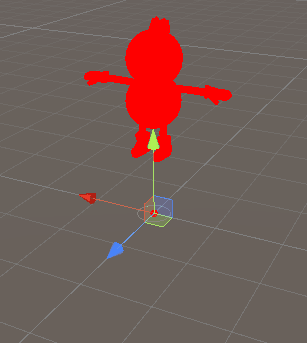

Unlitシェーダー入門
Unlitシェーダーを書きながら、Unityのシェーダーについて少しずつ学んでいきます。
なお、この資料で使っているUnityのバージョンはUnity2019.4.11です。
Unlitシェーダーとは、ライティングを行わないシェーダーのことです。
ライティングを行わないので、シェーダープログラムも比較的シンプルになります。
まずはUnlitシェーダーを書いて、シェーダーを学んでいきましょう。
UnityHubを起動して新しいプロジェクトを作ります。
プロジェクト名は「UnlitShaderPractice」などと適当に付けましょう。
素材をこちらからダウンロードしてください。
素材をインポートし、3Dモデルをシーンに配置します。
Positionは (0, 0, 0) にしておきましょう。
Projectウィンドウで
Create＞Shader＞Unlit Shader
ファイル名は「MyFirstShader」とでもしましょう。
作ったファイルをダブルクリックします。VisualStudioで開かれると思います。
最初から、シェーダープログラムが書いてあります。
とりあえずこのまま、オブジェクトに適用してみましょう。
Projectウィンドウで
Create＞Material
ファイル名は「MyFirstShaderMat」とでもしましょう。
MyFirstShaderをMyFirstShaderMatに設定します。
Shader欄をクリックし、Unlit＞MyFirstShaderを選択します。
Textureも設定しておきましょう。
MyFirstShaderMatをオブジェクトに適用します。
これがUnlitシェーダーの初期状態の見た目です。Unlitの名の通り、ライトの影響は受けず、陰影の無いのっぺりとした見た目になります。
初期状態のUnlitシェーダーには、わりと余計なものがゴテゴテ付いているので、極限まで削ぎ落としたシェーダーを自分で書いてみましょう。
MyFirstShader.shaderを編集します。
Shader "Unlit/MyFirstShader"
{
SubShader
{
Pass
{
CGPROGRAM
#pragma vertex vert
#pragma fragment frag
struct appdata
{
float4 vertex : POSITION;
};
float4 vert (appdata v) : SV_POSITION
{
return UnityObjectToClipPos(v.vertex);
}
fixed4 frag () : SV_Target
{
return float4(1, 0, 0, 1);
}
ENDCG
}
}
}
保存すると、すぐにUnity上に反映されます。
真っ赤に表示されるシェーダーの完成です。
ちなみに、シェーダープログラムに誤りがあってコンパイルエラーとなる場合は、以下のように表示されます。
この強烈なピンク色（紫）は、シェーダーのエラーを表す色です。
(1, 0, 1, 1)です。
この色が出ているということは、シェーダーが正しく機能していないということです。
コードにコメントする形で説明していきます（青字が説明コメント）：
Shader "Unlit/MyFirstShader" ←Unity上で表示されるカテゴリ名とシェーダー名。好きに付けて良い。
{
SubShader ←SubShaderブロック。ハードの性能に応じてシェーダーを切り替えるときなんかは、これを複数定義する。初心者は1個で十分。
{
Pass ←Passブロック。複数定義すると、描画処理を2回行ったりすることができる。まあしばらくは1個で十分。アウトラインを出したいときなどは2つ使ったりする。
{
CGPROGRAM ←「ここから下の記述はCg言語ですよ」という合図。Cg言語というのは、シェーダーを記述するための言語のひとつ。
#pragma vertex vert ←頂点シェーダー（vertex shader）の関数名は「vert」だよ、という定義。関数名は好きな名前にして良いが、普通はvertにする。
#pragma fragment frag ←フラグメントシェーダー（fragment shader）の関数名は「frag」だよ、という定義。関数名は好きな名前にして良いが、普通はfragにする。
↓入力構造体（Unityからデータを受け取るための構造体）の定義。
appdataという名前は好きな名前に変えて良いが、普通はappdataとする。
struct appdata
{
↓float4 vertexの部分は型と変数名の定義。変数名は自由。
: POSITIONの部分はセマンティクスの指定。セマンティクスとは「意味」という意味で、その変数にどのデータを格納すれば良いかを表す。
POSITIONというのは頂点座標のこと。つまり、vertexという変数には頂点座標（オブジェクト空間）が格納される。
float4 vertex : POSITION;
};
↓頂点シェーダー関数の定義。
「float4」は戻り値の型を表す。「: SV_POSITION」はセマンティクスであり、戻り値が頂点座標であることを表す。
頂点シェーダーの戻り値はfloat4型でも構造体でも良いが、いずれにせよ、SV_POSITIONセマンティクスが付与されたデータを返却しなければならない。
float4 vert (appdata v) : SV_POSITION
{
↓UnityObjectToClipPos()というのはオブジェクト空間をクリップ空間に変換するヘルパー関数。
MVP行列をかけるのと同じ。
return UnityObjectToClipPos(v.vertex);
}
↓フラグメントシェーダー関数の定義。
「: SV_Target」は、画面のピクセルを塗るという意味のセマンティクス。
別の指定を行うことも可能だが、まず使わないので、とりあえずSV_Targetと書いておけばOK。
fixed4 frag () : SV_Target
{
↓RGBAが(1, 0, 0, 1)の色を返却。つまり赤を返却。
return float4(1, 0, 0, 1);
}
ENDCG ←「ここまでがCg言語ですよ」という合図。
}
}
}
初期状態のシェーダーに書いてあったのはなんだったのか
初期状態のシェーダーに書いてある内容の意味を完全に理解したい場合は、こちらのページがとても参考になります。
アマガミナブログ - Unityシェーダプログラム入門 UnlitShaderの要素を全て解説
ある程度シェーダーの書き方がわかってきたら、読んでみると、さらに理解が進むでしょう。
Unityのシェーダーではfloat4という型を使いまくります。
これは、float型の値を4つまとめたものです。
様々な用途に使われます。
Unity C#のVector3のように、座標やベクトルを表すためにも使います。
Unity C#のColorのように、色情報（RGBA）を格納するためにも使います。
例えば、新たにblueという名前の変数を作り、そこに青い色を格納するコードは次のようになります。
float4 blue = float4(0, 0, 1, 1);
※シェーダーでは、色の各要素（RGBA）を0～1で指定します。0～255ではないので注意！
中身の各要素にアクセスしたい場合、変数名.x、変数名.yとしたり、変数名.r、変数名.gとしたりしてアクセスすることができます。
例えば、上記の変数blueの青要素にアクセスしたい場合はblue.bとします。
ちなみに、blue.zと書いてもまったく同じ結果になります（混乱するので普通はしません）。
float4の他に、float、float2、float3もあります。用途によって使い分けます。
ちなみに、さらに、モバイル機などのために、精度を落として処理負荷を下げた型（fixed、half）もあるのですが、この授業は入門が目的なので、高速化を目的としたそれらの型は扱いません（PCだと意味無いし）。
vert関数の内容を、次のように書き換えてみましょう：
float4 vert(appdata v) : SV_POSITION
{
// 入力構造体から頂点座標（オブジェクト空間）を取り出す
float4 objectPos = v.vertex;
// モデル行列を使って、オブジェクト空間からワールド空間に変換
float4 worldPos = mul(UNITY_MATRIX_M, objectPos);
// ビュー行列を使って、ワールド空間からビュー空間に変換
float4 viewPos = mul(UNITY_MATRIX_V, worldPos);
// プロジェクション行列を使って、ビュー空間からクリップ空間に変換
float4 clipPos = mul(UNITY_MATRIX_P, viewPos);
// クリップ空間に変換された座標を返却する
return clipPos;
}
書けたら、保存してUnity上で確認しましょう。
結果は、先ほどと何も変わりません。
もともと書いてあったUnityObjectToClipPos()というのはMVP行列をかけるのと同じなので、当然です。
今回は理解を深めるために、あえてバラしてみました。
特に必要なければ、普通は素直にUnityObjectToClipPos()を使いましょう。
例えば次のようにすると、オブジェクトの表示位置が、本来の位置から1メートル上にズレます。（黄色部分を追加）
float4 vert(appdata v) : SV_POSITION
{
// 入力構造体から頂点座標（オブジェクト空間）を取り出す
float4 objectPos = v.vertex;
objectPos.y += 1;
// モデル行列を使って、オブジェクト空間からワールド空間に変換
float4 worldPos = mul(UNITY_MATRIX_M, objectPos);
// ビュー行列を使って、ワールド空間からビュー空間に変換
float4 viewPos = mul(UNITY_MATRIX_V, worldPos);
// プロジェクション行列を使って、ビュー空間からクリップ空間に変換
float4 clipPos = mul(UNITY_MATRIX_P, viewPos);
// クリップ空間に変換された座標を返却する
return clipPos;
}
これだけではあまり面白くないので、時間とともに動くようにしてみましょう。
float4 vert(appdata v) : SV_POSITION
{
// 入力構造体から頂点座標（オブジェクト空間）を取り出す
float4 objectPos = v.vertex;
objectPos.y += sin(_Time.y);
// モデル行列を使って、オブジェクト空間からワールド空間に変換
float4 worldPos = mul(UNITY_MATRIX_M, objectPos);
// ビュー行列を使って、ワールド空間からビュー空間に変換
float4 viewPos = mul(UNITY_MATRIX_V, worldPos);
// プロジェクション行列を使って、ビュー空間からクリップ空間に変換
float4 clipPos = mul(UNITY_MATRIX_P, viewPos);
// クリップ空間に変換された座標を返却する
return clipPos;
}

sin()は三角関数のサインです。
_Time.yはUnityが用意してくれた変数で、シーン開始からの秒数が格納されています。
さらに書き足してみましょう：
float4 vert(appdata v) : SV_POSITION
{
// 入力構造体から頂点座標（オブジェクト空間）を取り出す
float4 objectPos = v.vertex;
objectPos.y += sin(_Time.y + objectPos.x);
// モデル行列を使って、オブジェクト空間からワールド空間に変換
float4 worldPos = mul(UNITY_MATRIX_M, objectPos);
// ビュー行列を使って、ワールド空間からビュー空間に変換
float4 viewPos = mul(UNITY_MATRIX_V, worldPos);
// プロジェクション行列を使って、ビュー空間からクリップ空間に変換
float4 clipPos = mul(UNITY_MATRIX_P, viewPos);
// クリップ空間に変換された座標を返却する
return clipPos;
}
なぜこのような結果になるのか、考えてみてください。
オブジェクトのRotationのxを90度回転させてみましょう。
すると、結果は次のようになります：
動きをよく確認したら、シェーダープログラムを次のように書き換えてみましょう：
float4 vert(appdata v) : SV_POSITION
{
// 入力構造体から頂点座標（オブジェクト空間）を取り出す
float4 objectPos = v.vertex;
//objectPos.y += sin(_Time.y + objectPos.x);
// モデル行列を使って、オブジェクト空間からワールド空間に変換
float4 worldPos = mul(UNITY_MATRIX_M, objectPos);
worldPos.y += sin(_Time.y + worldPos.x);
// ビュー行列を使って、ワールド空間からビュー空間に変換
float4 viewPos = mul(UNITY_MATRIX_V, worldPos);
// プロジェクション行列を使って、ビュー空間からクリップ空間に変換
float4 clipPos = mul(UNITY_MATRIX_P, viewPos);
// クリップ空間に変換された座標を返却する
return clipPos;
}
結果を確認しましょう。
どのように変わりましたか？
なぜそのように変わったのでしょうか？
ビュー空間で揺らすとどうなるでしょうか？
Unityでシェーダーを書くにあたっては、変換行列はUnityが用意してくれるため、座標空間と変換行列の役割さえ理解しておけば、行列に関する詳しい知識は無くても、ほとんど問題ありません。
ただ、マニアックな表現をしようとすると、自分で変換行列を組み立てる必要が出てくることもあるでしょう。その場合は、行列の知識がある程度必要になってきます。
例えば、頂点シェーダー内で任意の回転を行いたいという場合、回転行列がわかっていれば、実現できます。
float4 vert(appdata v) : SV_POSITION
{
// 入力構造体から頂点座標（オブジェクト空間）を取り出す
float4 objectPos = v.vertex;
// 回転角度。オブジェクトの中心から離れるほど増える。時間経過でも増える。
float theta = objectPos.y * 4 * _Time.y;
// サインとコサインを求める
float s = sin(theta);
float c = cos(theta);
// Y軸回転させる回転行列
float4x4 rotateMatrix = float4x4(
c, 0, s, 0,
0, 1, 0, 0,
-s, 0, c, 0,
0, 0, 0, 1);
// 回転行列をかけて座標変換
objectPos = mul(rotateMatrix, objectPos);
// モデル行列を使って、オブジェクト空間からワールド空間に変換
float4 worldPos = mul(UNITY_MATRIX_M, objectPos);
// ビュー行列を使って、ワールド空間からビュー空間に変換
float4 viewPos = mul(UNITY_MATRIX_V, worldPos);
// プロジェクション行列を使って、ビュー空間からクリップ空間に変換
float4 clipPos = mul(UNITY_MATRIX_P, viewPos);
// クリップ空間に変換された座標を返却する
return clipPos;
}
シェーダーの勉強とともに、行列の勉強も行うと、プログラマーとして一段と成長できるでしょう。
なお、変換行列や逆行列の式などを暗記する必要はありません。その都度調べれば済むことです。
各種行列の特徴などを把握していればOKです。
ちなみに、上記のY軸回転させるシェーダーですが、Y軸回転はXZ平面で二次元の回転を行うのと同じなので、以下のように簡略化することができます：
float4 vert(appdata v) : SV_POSITION
{
// 入力構造体から頂点座標（オブジェクト空間）を取り出す
float4 objectPos = v.vertex;
// 回転角度。オブジェクトの中心から離れるほど増える。時間経過でも増える。
float theta = objectPos.y * 3 * _Time.y;
// サインとコサインを求める
float s = sin(theta);
float c = cos(theta);
// Y軸回転させる回転行列
float2x2 mat = float2x2(
c, s,
-s, c);
// xとz要素に回転行列をかけて座標変換
objectPos.xz = mul(mat, objectPos.xz);
// モデル行列を使って、オブジェクト空間からワールド空間に変換
float4 worldPos = mul(UNITY_MATRIX_M, objectPos);
// ビュー行列を使って、ワールド空間からビュー空間に変換
float4 viewPos = mul(UNITY_MATRIX_V, worldPos);
// プロジェクション行列を使って、ビュー空間からクリップ空間に変換
float4 clipPos = mul(UNITY_MATRIX_P, viewPos);
// クリップ空間に変換された座標を返却する
return clipPos;
}
上記のobjectPos.xzというのはスウィズル表記というもので、シェーダー言語特有の記述になります。
ベクトルなどから、使いたい要素のみを取得したり、代入したりすることができます。
変数名.xxxや変数名.zyx、変数名.rgなどと書くこともできます。
上記のようにobjectPos.xzとした場合はfloat2型として扱われます。